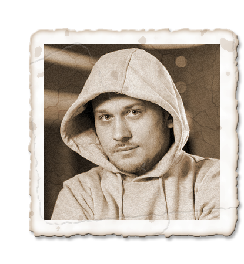

Apache Kafka
что это и как она изменит архитектуру вашего приложения
@inponomarev
|
Наш план
 |
| |
Что такое лог?

Добавляем данные в конец
Записанное не можем изменить
Читаем последовательно
— Что наша жизнь?
— Что наша жизнь?
— Лог!
Автоматизировать склад. Как?
| товар | ячейка | кол-во |
|---|---|---|
X | A | 8 |
X | B | 2 |
Y | B | 1 |
Всё хорошо, пока…
Что это может быть?
|
Что это может быть?
|
Что будем делать?

Как на самом деле надо проектировать?
 |
|
Как на самом деле надо проектировать?
|
|
 |
|
Warehouse Ledger
| дата | товар | ячейка | кол-во | описание |
|---|---|---|---|---|
02.04.2020 | X | A | 10 | начальный остаток |
02.04.2020 | X | B | 2 | начальный остаток |
02.04.2020 | Y | B | 1 | начальный остаток |
Warehouse Ledger
| дата | товар | ячейка | кол-во | описание |
|---|---|---|---|---|
02.04.2020 | X | A | 10 | начальный остаток |
02.04.2020 | X | B | 2 | начальный остаток |
02.04.2020 | Y | B | 1 | начальный остаток |
09.04.2020 | X | A | -2 | Василий по заданию №1 |
Warehouse Ledger
| дата | товар | ячейка | кол-во | описание |
|---|---|---|---|---|
02.04.2020 | X | A | 10 | начальный остаток |
02.04.2020 | X | B | 2 | начальный остаток |
02.04.2020 | Y | B | 1 | начальный остаток |
09.04.2020 | X | A | -2 | Василий по заданию №1 |
09.04.2020 | X | B | 2 | Василий по заданию №1 |
А если мы ошиблись с учётом?
| дата | товар | ячейка | кол-во | описание |
|---|---|---|---|---|
9.04.2020 | X | A | -2 | Василий по заданию №1 |
9.04.2020 | X | B | 2 | Василий по заданию №1 |
9.04.2020 | X | A | 2 | Сторно задания №1 |
9.04.2020 | X | B | -2 | Сторно задания №1 |
На какие вопросы уже можно ответить?
Сколько у нас всего на складе товара Y?
Что лежит в ячейке B?
Сколько товаров переместил Василий 9 апреля?
Какие корректировки вносились в систему?
Расследуем инцидент
9 апреля Василий должен был положить товар из A в В.
Давайте посмотрим, что лежит в A?
Давайте спросим Василия?
На какие вопросы можно будет легко ответить?
Нагрузка на полку лимитирована 100 кг
— Добавляем поле "вес" в Ledger!
Нужно посчитать зарплату работников склада
— Даже добавлять ничего не надо.
Архитектура решения: лог не работает в одиночку

Предварительный итог
Наличие лога позволяет
Добавлять новую функциональность
Искать корелляции событий, выявлять и расследовать мошенническое поведение
Исправлять алгоритмические ошибки и пересчитывать данные
Наша жизнь — это append-only log
Наш план
|
| |
Наш план
|
| |
Kafka это
|
В Кафке можно
|
|
В Кафке нельзя
|
|
Наш план
|
| |
Кластер Kafka: брокеры и Zookeeper
Топики, партиции и сообщения

Топики, партиции и сообщения

Топики, партиции и сообщения

Репликация партиций

Репликация партиций

Репликация партиций

Репликация партиций

Репликация партиций

Репликация партиций
Наш план
|
| |
Анатомия сообщения

Анатомия сообщения
// hash the keyBytes to choose a partition
return Utils.toPositive(Utils.murmur2(keyBytes)) % numPartitions;Пропускная способность vs время ожидания
batch.size and linger.ms
 |  |
Запись в Кафку
acks = 0

Запись в Кафку
acks = 1

Запись в Кафку
acks = -1
min.insync.replicas
Наш план
|
| |
Чтение из Кафки

Чтение из Кафки

Чтение из Кафки

Чтение из Кафки

Offset Commit

Offset Commit
Offset Commit

Offset Commit
Offset Commit

Offset Commit
Offset Commit

Наш план
|
| |
Как работает retention
Как работает retention

Как работает retention
Как работает retention

Как работает retention

Как работает retention


Компактификация топиков

Наш план
|
| |
Потоковая обработка данных: архитектура
Существующие фреймворки потоковой обработки
Когда меня спрашивают, какой стриминговый фреймворк использовать

Когда меня спрашивают, какой стриминговый фреймворк использовать

Stateless Transformation
KStream<String, String> stream = streamsBuilder.stream(
SRC_TOPIC, Consumed.with(Serdes.String(), Serdes.String());Stateless Transformation

KStream<String, String> upperCasedStream =
stream.mapValues(String::toUpperCase);Stateless Transformation
upperCasedStream.to(SINK_TOPIC,
Produced.with(Serdes.String(), Serdes.String());Три строчки кода, ну и что тут такого?
Больше сообщений в секунду? — больше машин с одинаковым
application.id!

Добавляем ноды

Ограничены только числом партиций

Магия Stateful Transformation
Изменения реплицируются в топик!

Партиционирование и local state

Партиционирование и local state

Партиционирование и local state

Партиционирование и local state

Партиционирование и local state

Партиционирование и local state

Партиционирование и local state

Партиционирование и local state

Что ещё умеют стримы?
Соединять источники!

Агрегировать данные во временных окнах
«Склеивать» данные, относящиеся к рабочей сессии

KSQL
CREATE STREAM pageviews_enriched AS
SELECT pv.viewtime,
pv.userid AS userid,
pv.pageid,
pv.timestring,
u.gender,
u.regionid,
u.interests,
u.contactinfo
FROM pageviews_transformed pv
LEFT JOIN users_5part u ON pv.userid = u.userid
EMIT CHANGES;KSQL
CREATE TABLE pageviews_per_region_per_30secs AS
SELECT regionid,
count(*)
FROM pageviews_enriched
WINDOW TUMBLING (SIZE 30 SECONDS)
WHERE UCASE(gender)='FEMALE' AND LCASE(regionid)='region_6'
GROUP BY regionid
EMIT CHANGES;Кейсы для потоковых систем
Мониторинг! Логи!
Отслеживание действий пользователей
Выявление аномалий (в т. ч. попыток мошенничества)


О чём следует помнить
При изменении схемы данных миграция не похожа на RDBMS.
Once-only delivery:
В обычном режиме, сбой в KStreams приводит к повторному чтению данных.
В режиме once-only delivery — чтение и запись между топиками Kafka.
Если нужно хранить данные всё время
Лямбда-архитектура
Никита Сальников-Тарновский //https://2019.jokerconf.com/2019/talks/2qw2ljhlfoeiipjf0gfzzb/[Потоковое приложение — это не только код, но и 3-4 года поддержки в проде] |
Наш план
|
| |
Kafka и Javascript

Kafka и Javascript

kafka-node
Лидер по звёздам и количеству использований
Чистая JavaScript-реализация
Умеет не всё.
node-rdkafka

Github-метрики проигрывают kafka-node
JavaScript/C++
Обёртка вокруг librdkafka — очень зрелого проекта
Умеет работать с Confluent Cloud
Преобразующий/выходной каскад на node.js?
Преобразующий/выходной каскад на node.js?
 |
|
KSQL + Serverless

Наш план
|
| |
Вы решили попробовать Кафку. С чего начать?
kafkacat — лучший CLI инструмент

Conduktor — лучший GUI инструмент
Эксплуатировать Кафку в production тяжело
 | Григорий Кошелев |
Kafka: The Definitive Guide
 |
|
Сообщества, конференции
Kafka Summit Conference: https://kafka-summit.org/
Телеграм
Грефневая Кафка
Митап в Москве
Moscow Apache Kafka® Meetup by Confluent — раз в квартал
На этом всё!
|
Спасибо!